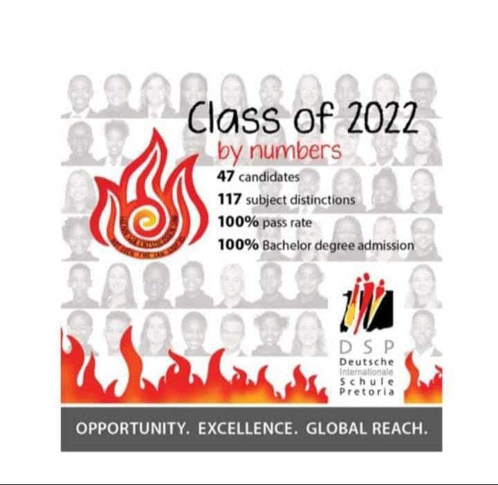
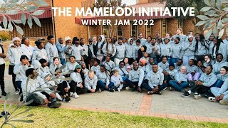
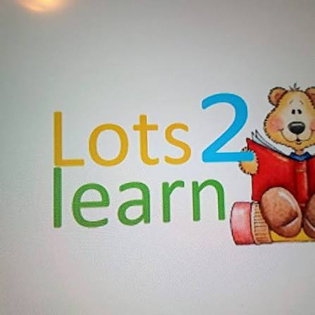

Professional Experience
Mentor at Deutsche Internationale Schule Pretoria
Oct 2019
- Mentored students academically.
- Assisted with IT-related subjects.
- Guided learners in problem-solving.
- Developed leadership skills.

Tutor at the Mamelodi Initiative
Jan 2023 - June 2025
- Delivered structured lessons to learners.
- Assisted students with academic support.
- Planned educational activities.
- Used technology to improve learning.
- Developed strong communication and leadership skills.

Assistant Teacher at Lots2Learn Preschool
June 2021
- Assisted teachers with classroom activities.
- Used educational software.
- Managed administrative duties.
- Supported learners.
